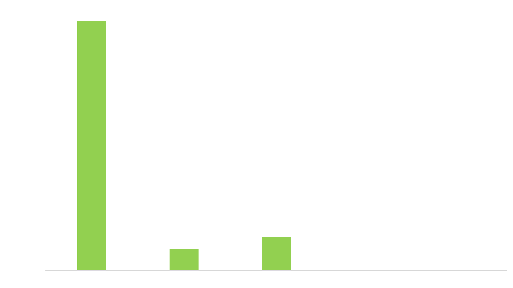
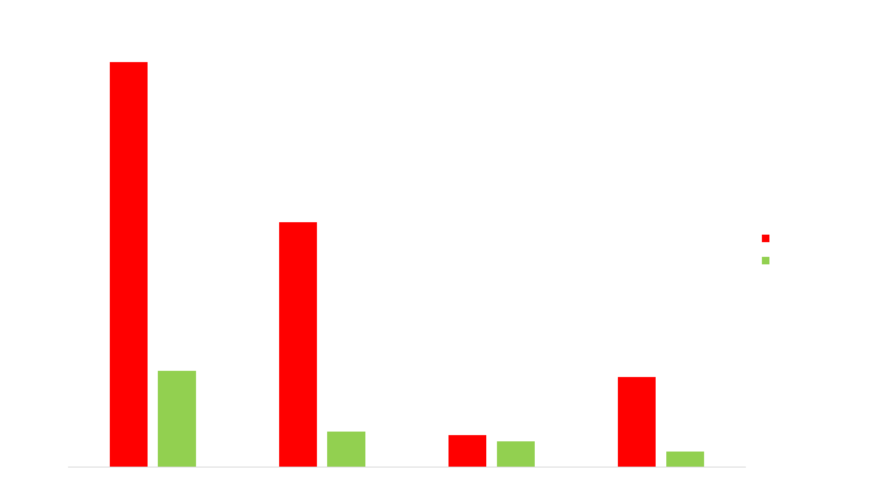

The leading countries in renewable energy production.
China
The most important measure in the energy balance of China is the total consumption of 7.14 million GWh of electric energy per year. Renewable energies include wind, solar, biomass and geothermal energy sources. This means all energy sources that renew themselves within a short time or are permanently available. China produces around 1.73 million GWh of renewable energy per year, which is around 24% of their total energy consumption.- Hydropower:
- Using Hydro Power China produces 1.15 million GWh of electric energy, which is 66.3% of the total renewable energy.
- Wind Power:
- Using Wind Power China produces 0.3 million GWh of electric energy, which is 20.5% of the total renewable energy.
- Biomass Energy:
- Using Biomass and waste products China produces 0.1 million GWh of electric energy, which is 6.4% of the total renewable energy.
- Solar Power:
- Using Solar Power China produces 0.1 million GWh of electric energy, which is 6.7% of the total renewable energy.
- Geothermal Energy:
- Using Geothermal Energy China produces 143.5 GWh of electric energy, which is approximately 0% of the total renewable energy. Please note: The data presented here is based on the year 2019.
The sources of renewable energy used in China are:

United States
The most important measure in the energy balance of United States is the total consumption of 4.32 million GWh of electric energy per year. Renewable energies include wind, solar, biomass and geothermal energy sources. This means all energy sources that renew themselves within a short time or are permanently available. US produces around 637 thousand GWh of renewable energy per year, which is around 14% of their total energy consumption.- Hydropower:
- Using Hydropower United States produces 292 thousand GWh of electric energy, which is 45.9% of the total renewable energy.
- Wind Power:
- Using Wind Power United States produces 229 thousand GWh of electric energy, which is 36% of the total renewable energy.
- Biomass Energy:
- Using Biomass and Waste products United States produces 69 thousand GWh of electric energy, which is 10.8% of the total renewable energy.
- Solar Power:
- Using Solar power United States produces 292 thousand GWh of electric energy, which is 45.9% of the total renewable energy.
- Geothermal Energy:
- Using Geothermal Energy United States produces 18 thousand GWh of electric energy, which is 2.9% of the total renewable energy. Please note: The data presented here is based on the year 2016.
The sources of renewable energy used in United States are:

Brazil
The most important measure in the energy balance of Brazil is the total consumption of 578 thousand GWh of electric energy per year. Renewable energies include wind, solar, biomass and geothermal energy sources. This means all energy sources that renew themselves within a short time or are permanently available. Brazil produces around 465 thousand GWh of renewable energy per year, which is around 80% of their total energy consumption.- Hydropower:
- Using Hydropower Brazil produces 380 thousand GWh of electric energy, which is 81.8% of the total renewable energy.
- Wind Power:
- Using Wind Power Brazil produces 33 thousand GWh of electric energy, which is 7.2% of the total renewable energy.
- Biomass Energy:
- Using Biomass and Waste Products Brazil produces 51 thousand GWh of electric energy, which is 11% of the total renewable energy.
- Solar Power:
- Using Solar Power Brazil produces 138.8 GWh of electric energy, which is approximately 0 % of the total renewable energy.
- Geothermal Energy:
- Using Geothermal Energy Brazil produces negligible amount of electric energy as compared to other sources of renewable energy. Please note: The data presented here is based on the year 2016.
The sources of renewable energy used in Brazil are:

India
The most important measure in the energy balance of India is the total consumption of 1.5 million GWh of electric energy per year. Renewable energies include wind, solar, biomass and geothermal energy sources. This means all energy sources that renew themselves within a short time or are permanently available. India produces around 288 thousand GWh of renewable energy per year, which is around 18% of their total energy consumption.- Hydropower:
- Using Hydropower India produces 165 thousand GWh of electric energy, which is 57.21 % of the total renewable energy.
- Wind Power:
- Using Wind Power India produces 64 thousand GWh of electric energy, which is 22.3% of the total renewable energy.
- Biomass Energy:
- Using Biomass and Waste Products India produces 13 thousand GWh of electric energy, which is 4.8 % of the total renewable energy.
- Solar Power:
- Using Solar Power India produces 50 thousand GWh of electric energy, which is around 17.3% of the total renewable energy.
- Geothermal Energy:
- Using Geothermal Energy India produces negligible amount of electric energy as compared to other sources of renewable energy. Please note: The data presented here is based on the year 2019.
The sources of renewable energy used in India are:
Conclusion
